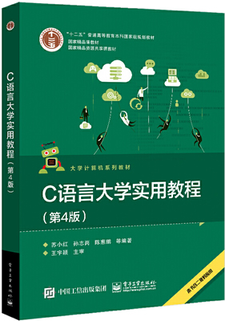

首页 > 书籍下载
《C语言大学实用教程(第4版)》PDF下载（高清完整版）
|  | 作者：苏小红、孙志岗、陈惠鹏 |
| 出版时间：2017年01月01日 | |
| 出版社：电子工业出版社 | |
| 书号ISBN：9787121300059 | |
| 总页数：360 | |
| 总字数：57.6W |
这是一本充满趣味性和实用性的 C 语言书籍，知识点全面，实例丰富，很多大学把它作为课堂教材，也适合作为全国计算机等级考试的参考资料。
这里提供的是《C语言大学实用教程(第4版)》的高清 PDF 下载，内容完整，附带目录标签。
这本书的内容完整，基本涵盖了 C 语言所有的知识点，书中还加入了大量的编程实例。作为一名老程序员，建议在读这本书的过程中，把书中的代码多敲几遍，书中的编程实例尝试自己独立解决，最终就能入门 C 语言。
下面是一位购买了这本书的读者给出的评价：
这本书主要是购买来用于学习C语言的编程知识，个人感觉的话书本还不错，可以用来学习计算机编程知识，提高自己的编程能力，能够收获知识。
另外一位读者也给出了好评：书很好啊，挺有用的，看了上岸了。
书籍目录
- 第1章 程序设计ABC 1
- 1.1 计算机与人 1
- 1.2 计算机与程序设计语言 3
- 1.3 程序设计语言的故事 5
- 1.4 C语言的故事 7
- 1.5 程序设计语言的工作原理 11
- 1.6 本章小结 12
- 习题1 13
- 第2章 数据类型、运算符与表达式 14
- 2.1 一个简单的C程序例子 14
- 2.2 C程序常见符号分类 16
- 2.3 数据类型 17
- 2.4 常量 21
- 2.5 变量 25
- 2.6 常用运算符及表达式 33
- 2.7 赋值和表达式中的类型转换 43
- 2.8 本章小结 45
- 习题2 45
- 第3章 键盘输入与屏幕输出 47
- 3.1 C语句分类 47
- 3.2 表达式语句 47
- 3.3 复合语句和空语句 48
- 3.4 基本的输入/输出操作 49
- 3.5 本章小结 64
- 习题3 65
- 第4章 程序的控制结构 68
- 4.1 算法及其描述方法 68
- 4.2 顺序结构 71
- 4.3 选择结构 75
- 4.4 循环结构 88
- 4.5 流程转移控制语句 108
- 4.6 程序调试与排错 115
- 4.7 结构化程序设计方法简介 124
- 4.8 本章小结 129
- 习题4 130
- 第5章 函数 139
- 5.1 程序设计的艺术 139
- 5.2 函数的定义与使用 140
- 5.3 变量的作用域和存储类型 145
- 5.4 函数封装 150
- 5.5 预处理指令 151
- 5.6 使用assert()查错 154
- 5.7 模块和链接 155
- 5.8 模块化程序设计方法简介 158
- 5.9 递归 161
- 5.10 本章小结 166
- 习题5 166
- 第6章 数组 171
- 6.1 数组类型的应用场合 171
- 6.2 数组的定义、引用和初始化 171
- 6.3 向函数传递一维数组 181
- 6.4 向函数传递二维数组 192
- 6.5 字符数组 196
- 6.6 本章小结 202
- 习题6 203
- 第7章 指针 209
- 7.1 指针概述 209
- 7.2 指针和数组间的关系 226
- 7.3 指针数组 239
- 7.4 函数指针 243
- 7.5 带参数的main()函数 249
- 7.6 动态数组的实现 250
- 7.7 使用const修饰指针变量 256
- 7.8 代码风格 257
- 7.9 本章小结 262
- 习题7 263
- 第8章 结构体与共用体 269
- 8.1 结构体的应用场合 269
- 8.2 结构体类型与结构体变量 271
- 8.3 结构体数组 277
- 8.4 向函数传递结构体 282
- 8.5 动态数据结构 284
- 8.6 共用体 293
- 8.7 本章小结 295
- 习题8 295
- 第9章 文件操作 299
- 9.1 计算机中的流 299
- 9.2 文件 300
- 9.3 基本文件操作 302
- 9.4 高级文件操作 312
- 9.5 本章小结 316
- 习题9 317
- 第10章 C程序设计常见错误及解决方案 318
- 附录
- 附录A 常用基本概念、名词、语句、运算符、数据类型和算法索引表 331
- 附录B C关键字 337
- 附录C Visual C 下各数据类型所占字节数和取值范围 338
- 附录D C运算符的优先级与结合性 339
- 附录E ASCII码的字符编码 340
- 附录F ASCII码和ASCII扩展码字符表 341
- 附录G 常用的ANSI C标准库函数 342
书籍下载
一键登录，免费下载完整版 PDF，文件名称：《C语言大学实用教程(第4版)》.pdf